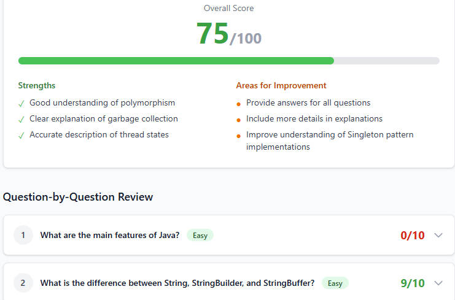
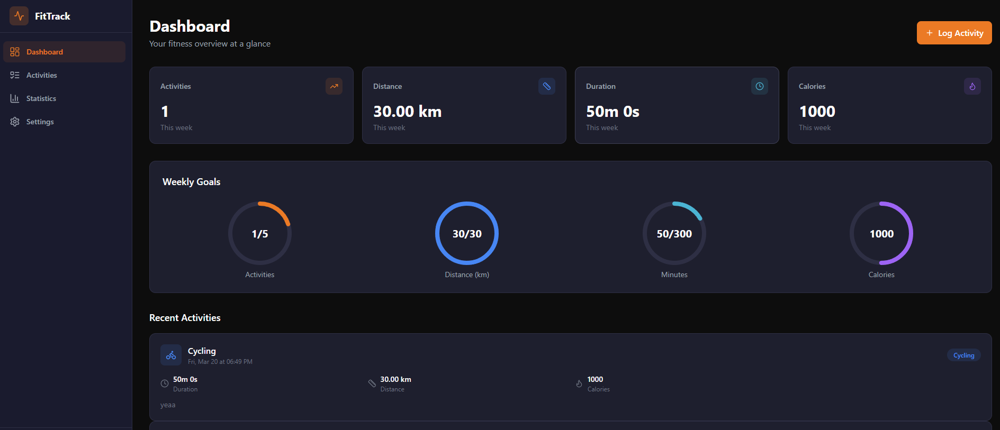
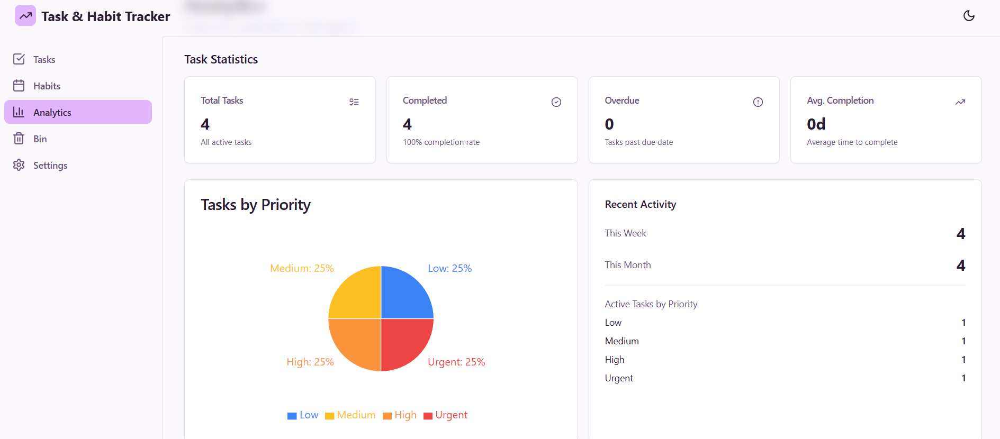
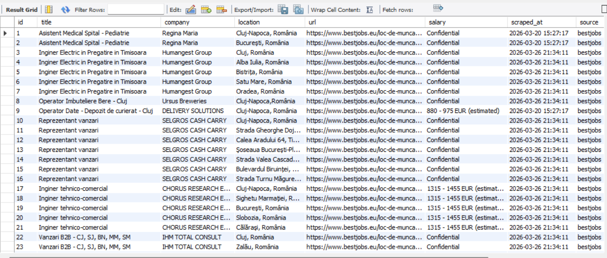
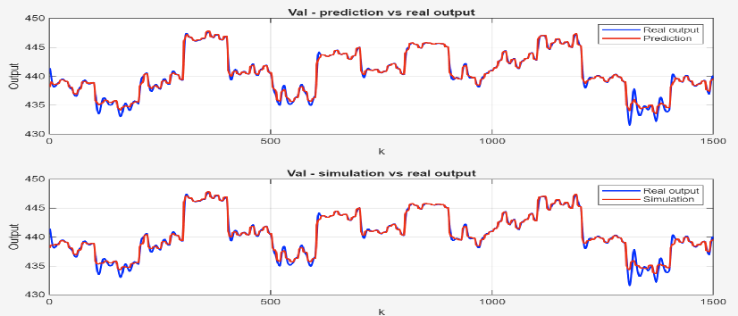

A collection of things I've built — from web apps to research tools.

This app helps people practice for Java interviews. It picks 12 random questions at different difficulty levels, and then uses GPT-4o to score the answers and give feedback. There's also a chat feature where you can discuss your answers with an AI coach.
View on GitHub
This was my most ambitious project — a full-stack fitness platform with both a web and a mobile app. I used Next.js for the web side, Expo for mobile, and Spring Boot for the backend analytics. Supabase handles authentication and the database.
View on GitHub
I wanted a simple app to organize my tasks and track habits, so I built one myself. It works offline thanks to IndexedDB.
View on GitHub
This scraper collects job listings from Romanian platforms like eJobs, BestJobs, and Hipo, all in one place. I used the Strategy pattern so it's easy to add new sites later. The data gets stored in a MySQL database running in Docker.
View on GitHub
This was a university project where I worked with MATLAB to learn about system identification. I implemented polynomial regression for static systems and ARX models for dynamic ones. It was challenging but really rewarding to see the math come together.
View on GitHub